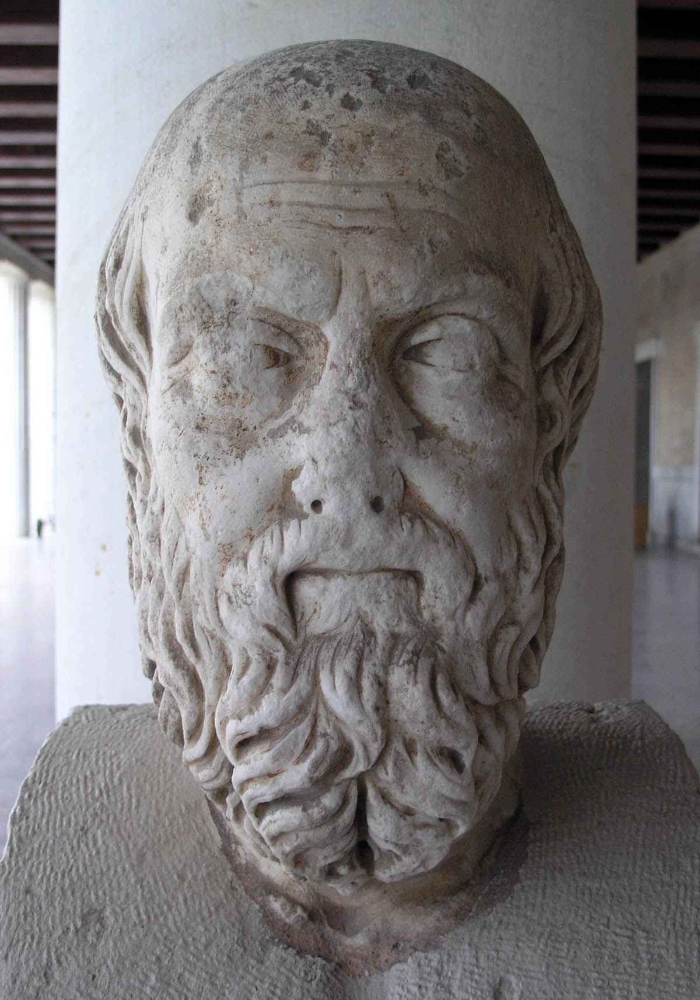
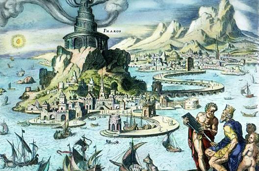

Seven Wonders of the Ancient World

The famous Greek historian Herodotus wrote of seven great architectural achievements. And although his writings did not survive, he planted seeds for what has become the list of the
Seven Wonders of the Ancient World.
These ancient wonders are
Colossus of Rhodes, Great Pyramid of Giza, Hanging Gardens of Babylon, Statue of Zeus at Olympia, Temple of Artemis at Ephesus, Mausoleum at Halicarnassus, and Lighthouse of Alexandria.
Of these wonders,
4 were destroyed by earthquake,
2 were destroyed by fire, and
1 is still standing.
Overview
History
GREAT PYRAMID OF GIZA

The Great Pyramid of Giza
was built in 2570 BC
and is still standing today.
It is believed to have taken 20 years and as many as 100,000 workers to complete the Great Pyramid, which was built as a tomb for the 4th dynasty Egyptian pharaoh named Khufu. It was built as part of a complex that included temples and many other pyramids.
The outermost stones of the pyramid were highly polished white limestone, which were eventually loosened by an earthquake more than 600 years ago, and were removed to help build cities and mosques. When these casing stones were present, some believe that the pyramid was so large and bright that it could be seen from the moon.
There is much speculation about the construction methodologies and intentions of the pyramid, including references to the moon, the Orion constellation, continental gravity, and more. What is known, however, is that the four sides of the base are more than 700 feet long, and differ in length by no more than 8 inches. Each side of the pyramid is almost perfectly aligned with the four cardinal points of the compass. And, the pyramid's dimensions covert to a ratio that equates to 2π with nearly perfect accuracy.
HANGING GARDENS OF BABYLON

The Hanging Gardens of Babylon
was built in 600 BC
and was destroyed by earthquake in 226 BC.
The first and most interesting fact about the gardens is that there is significant controversy about whether the gardens existed at all.
Whether they did or did not exist, there are many elaborate accounts and poetic descriptions of the gardens. They are generally believed to have been built by King Nebuchadrezzar II for his wife because she missed the gardens of her home. Some research suggests that it was an elaborate series of rooftop gardens. Another theory suggests that the gardens were built in the walls of the royal palace.
Babylon, being in the middle of the desert, had no such natural greenery, however; calling into question of how such lushness would have survived in the dryness of the desert. Recent excavations have suggested the use of an exceptional system of irrigation using a cellar well in conjunction with a chain pump to raise the water to the gardens. Still, other theories even suggest that the gardens weren't in Babylon at all. Rather, that they were constructed by Sennacherib at the eastern bank of the Tigris river.
Regardless of the final outcome, it is interesting to note that the imagination of the poets and ancient historians have created one of the Wonders of the World.
TEMPLE OF ARTEMIS AT EPHESUS

The Temple of Artemis at Ephesus
(Ἀρτεμίσιον)
was built in 550 BC
and was destroyed by fire in 356 BC.
The Temple of Artemis at Ephesus was built and rebuilt over the course of many years. The most famous was built in about 550 BC and was funded by King Croesus of Lydia.
Unlike many other temples of its time, it was built of marble and glittered with gold. The temple's foundation was over 180 by 350 feet and its steps led to a high platform on which stood more than one hundred beautifully sculptured columns that supported its roof. At least twice the size of the Parthenon, it was so breathtaking it was said to rise to the clouds.
The temple housed many incredible works of art, but the most famous was the statue of Artemis herself. Although the original no longer exists, it was thought to have been made of gold and other beautiful materials. Her legs were covered with animals and bees and the top of the body covered with breasts symbolizing fertility.
Although destroyed and rebuilt many times, and ultimately left to be destroyed by man, nature and neglect, the most famous version of the temple was destroyed by arson committed by a man named Herostratus on the night Alexander the Great was born.
STATUE OF ZEUS AT OLYMPIA
The Statue of Zeus at Olympia
(Δίας μυθολογία)
was built in 430 BC
and was destroyed by fire in 426 AD.
Carved from ivory, on a throne of cedarwood, the statue was created by the Greek sculptor Phidias around 430 BC. In its right hand was a life-size statue of Nike, the goddess of victory, and in its left was a large sceptre topped with an eagle. The statue, nearly 40 feet tall, was said to fill the entire width of the one of the aisles of the Temple of Zeus, and its head nearly scraped the temple's ceiling.
In 426 AD, the temple was destroyed and many historians believe that the statue was destroyed at that time. Others believe, however, that the statue was moved to Constantinople (now Istanbul) and was destroyed about 50 years later.
Although many copies of the statue were made during its 800+ year lifespan, none are known to have survived.
MAUSOLEUM AT HALICARNASSUS

The Mausoleum at Halicarnassus
(Μαυσωλεῖον Ἁλικαρνασσεύς)
was built in 352 BC
and was destroyed by earthquake in 1404 AD.
The monument was built as a tomb for Mausolus, a governor in the Persian Empire. Sparing no expense, his widowed wife Artemisia (who was also his sister as was considered customary) commissioned well-known Greek architects and artists to design the tomb and sculptural reliefs for each of the four sides of the building.
The monument was almost square, nearly 14 stories tall, and its base was more than 10,000 square feet. Each side of the tomb had nine massive columns, and the top was a stepped pyramid on which stood by a four-horse marble chariot in which there were images of Mausolus and Artemisia.
The monument stood for nearly 17 centuries and was eventually destroyed by a series of earthquakes. And, like the Lighthouse of Alexandria, the tomb was so famous that Mausolus's name has become the root word for large tombs in many languages (for example, "mausoleo" in Spanish).
COLOSSUS OF RHODES

The Colossus of Rhodes
(Κολοσσός της Ρόδου)
was built in 282 BC
and was destroyed by earthquake in 226 BC.
In 294 BC, the people of the island of Rhodes began building a colossal statue of the sun god Helios. They believed that it was because of his blessings that they were able to withstand a long siege on the island and emerge victorious.
The Colossus was built with bronze, reinforced with iron, and weighted with stones. While it is often depicted straddling Mandrákion harbor, this is now considered technically impossible; and therefore, it likely stood beside the harbor.
The statue was toppled by an earthquake in 226 BC. It snapped at the knees and fell over on to the land. The Oracle of Delphi suggested that it fell because the people of Rhodes had offended Helios, and they decided not to rebuild it.
The statue remained on the ground until 654 AD., and even broken, it was so impressive that many traveled to see it.
LIGHTHOUSE OF ALEXANDRIA

The Lighthouse of Alexandria
(ὁ Φάρος τῆς Ἀλεξανδρείας)
was built in 280 BC
and was destroyed by earthquake in 1323 AD.
Located on the island of Pharos in the harbor of Alexandria, the lighthouse may be the most famous lighthouse in history. The lighthouse was very different than modern lighthouses in that it was built in three stages, all sloping inward. Built of marble blocks with lead mortar; the lowest was square, the next octagonal, and the top cylindrical. Within the lighthouse was a ramp and "dumbwaiter" that allowed wood to be transported to the fire that burned at night.
Inside the open top of the lighthouse was a large curved mirror that was used to reflect the sunlight during the day and the fire at night. It is said that mariners could see the light up to 35 miles away. Legends have it that the light was so bright it could be used to burn enemy ships.
There are many stories about its ultimate demise, however, the most likely cause is believed to be as many as 22 earthquakes between 320 AD and 1323 AD which led to its decommission.
The Lighthouse of Alexandria was so famous in ancient times that the island on which it stood, Pharos, became the root word for lighthouse in many languages (for example, "phare" in French).